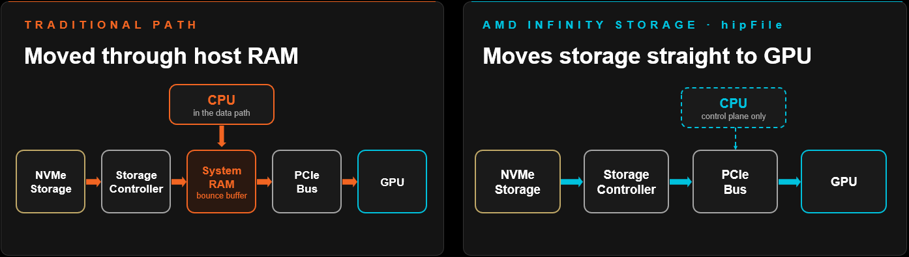

限制训练运行的到底是GPU算多快，还是数据送多快？模型和数据集越做越大，答案越来越偏向后者：checkpoint、KV cache、模型参数撑爆了离GPU最近的高速内存，存储到设备的路径成了最大瓶颈。ROCm 10.1整版就是冲着这个来的。
核心两招：AMD Infinity Storage的hipFILE让存储经PCIe直达GPU，CPU只留在控制面；HIP runtime的NUMA感知分配把主机内存放到用它的算力旁边。外加CLI、profiling、编译器、库的全套更新，下面逐项拆开。
限制训练运行的是GPU算多快，还是数据送多快？对越来越多的负载，答案是后者。ROCm 10.1从数据通路切入，背后还带着编译器、库与工具链的整套工作。
加速器原始吞吐仍是限制因素之一，但随着AI模型与HPC数据集扩大，新瓶颈浮现：怎么把数据喂给加速器。Checkpoint、KV cache、模型参数超过了离GPU最近的高速内存，存储到设备的路径成了最大瓶颈。ROCm 10.1用AMD Infinity Storage的实质改进与HIP runtime来应对：hipFile新增能力，让数据在存储与GPU之间直接搬运；HIP runtime加了NUMA感知的主机内存分配，把内存放到用它的算力旁边。
数据通路之外，10.1还推进了开发者工作流：AMD Skills目录配合ROCm CLI，给编码agent标准化集成，用来搭本地AI、诊断ROCm问题、在AMD硬件上优化LLM推理。
模型参数、checkpoint、KV cache增长，存储越来越成为饿死GPU而不是喂饱GPU的瓶颈。AMD Infinity Storage（AIS）在ROCm 7.14首次亮相，是个把数据在存储与内存之间直接搬运、不经CPU内存绕行的库。

10.1在这个基础上加了三项hipFILE改进，减少不必要的数据搬运、提高加速器利用率：一是异步快路径后端，读写请求直接跑在HIP stream上，跳过数据传统上经过的主机内存staging，checkpoint引擎与KV cache offload系统的延迟更低、持续吞吐更高；二是批量I/O API，一次提交多个文件请求、打散到内部工作线程池，大训练数据集与数据密集型推理管线的存储设备利用率更高；三是多层I/O统计，hipFILE遥测逐步丰富并流入ROCm profiling工具，更容易判断负载到底卡在算力、内存还是数据交付上。
CPU与GPU加多了，如果数据还得跨socket跑，性能不会自动变好。ROCm 10.1扩展HIP虚拟内存管理，让应用把主机内存分配在指定的CPU NUMA节点上，而不是回落到通用内存池。RCCL这类库可以用它建NUMA本地、零拷贝的通信管线，让数据搬运贴着用它的算力走，减少socket间的无效流量。
10.1还带来ROCm CLI v1.0.0：单二进制工具，负责在AMD GPU上安装、配置、跑本地AI负载。AMD给ROCm 10.0与10.1做了首选支持，包括为vLLM自动检测兼容的flash-attn与amd-aiter wheel；rocm install原生处理ROCm 10新的next包布局，有开关支持全非交互安装，方便脚本与CI环境；全屏TUI仪表盘在模型serving与聊天的同时看GPU实时遥测。ROCm CLI支持Linux、Windows与WSL2。
CLI是开发者直接用的工具，AMD Skills则把同样的ROCm经验带给AI编码agent。每个skill把验证过的配置打包成标准集成，Claude Code、Codex这类agent可以一致地应用。这次突出的两个新skill：quark-install，装或校验AMD Quark，配与加速器匹配的PyTorch构建（PyPI、wheel索引、本地wheel或源码），再检查import、kernel与quark-cli；quark-torch-llm-ptq，对PyTorch / Hugging Face LLM做训练后量化，检查模型、帮选方案（FP8、INT4等），产出验证过的量化模型。每个skill由对应产品的团队拥有并版本化，目录还会继续长。
ROCprofiler-SDK引入kernel replay（beta）：一次应用运行收齐全套counter，不用每个counter组重跑一次。GPU每次kernel dispatch能收的硬件性能counter有限，kernel replay原地重执行每个dispatch，pass之间恢复被跟踪的设备内存。SDK还让PyTorch Kineto、Triton Proton这类AI框架profiler在运行中任意时刻启停。新增的PC sampling agent skill指导AI编程助手对应用跑rocprofv3 PC采样，报告热点与stall原因。
ROCm Compute Profiler的独立roofline报告变成可交互HTML页：可以隔离单个kernel或roof，算术强度轴在cache层级间切换；PC sampling分析现在按kernel出结果，下钻到单条指令的采样与stall计数；推理负载新增了用Compute Profiler给vLLM做profiling的指南。
ROCm Systems Profiler开始支持Linux上的Gorgon Point 1、2、3 APU（gfx1150、gfx1152、gfx1153），这类集成GPU上的负载可以同时trace CPU与GPU活动。ROCm Optiq把统一可视化与分析能力扩展到rocprofv3，开发者可以在Optiq的统一界面里看最新的profiling数据，旁边就是Systems Profiler trace与Compute Profiler分析。
ROCm 10.1的编译器开发转到LLVM 24，吃到LLVM社区的一批新特性与优化，大项目重构建更快。amdclang++ 从LLVM 23升到24，C++ 语言支持与社区优化红利同步跟进。
10.1还给增量构建提速：缓存LTO拆分HIP设备代码时产生的分区，小改动可以复用没变的分区，不用从头重建。
升级提示：从ROCm 10.0升级这是大版本编译器变更，clang_major宏现在报24，检查按特定编译器版本写的代码或构建脚本，以及直接链libLLVM的工具。
Composable Kernel：AMD的优化AI kernel库，加速Radeon GPU上的attention，给kernel dispatcher带来更多量化矩阵乘类型。
MIGraphX：AMD的AI推理图编译器，后端从rocMLIR换成rocMLIRTriton，推理性能提升明显，模型编译经常更快，还能吃到Triton编译器后续的持续改进。
rocSPARSE：AMD的稀疏线性代数库，三角求解可以直接跑在ELLPACK（ELL）稀疏格式存储的矩阵上，不用先转格式。
ROCm SMI（rocm-smi）的弃用期结束，AMD SMI（amd-smi）接任。AMD SMI在Linux与Windows、裸机与虚拟化环境给AMD GPU、CPU、APU统一的监控管理体验，建议迁移。新工具提供现代子命令式CLI、原生C库（amd_smi_lib）、Python/Rust/Go的首选绑定。
AMD SMI还把可见性伸进容器环境：识别跑在containerd、CRI-O、Podman、LXC、LXD容器里的GPU进程，包括Kubernetes pod；上报Docker与Kubernetes工具用的完整容器ID，运维可以直接把GPU进程对上容器，做跨编排、多租户的资源归属。
WSL2在ROCm 10.1进入技术预览：标准Linux包直接装进guest，不用手动打补丁、不编guest内核。ROCm经GPU半虚拟化与Windows宿主驱动通信，PyTorch、HIP、AI负载在WSL2里直接用GPU。装好Windows驱动，再像往常一样在发行版里装ROCm。
ROCm把KVM SR-IOV支持扩展到Ubuntu 26.04 LTS，宿主与guest都是，团队可以把整个虚拟化栈标准化到最新的LTS。搭配宿主上9.3.0.K版AMD GPU虚拟化驱动（GIM），最新的Ubuntu LTS进全支持的SR-IOV部署，驱动版本不掉队。
写高性能GPU软件传统上要用底层执行与同步原语表达并发。ROCm 10.1在ROCm Core SDK的ROCm Threading库里引入hipThreads，把标准C++ 线程概念带进异构设备编程。hipThreads给已有CPU线程化代码一条在AMD GPU上加速的路，不用重写整个HIP。
库把这些CPU概念映射到Linux与Windows的GPU执行上，开发者可以渐进迁移。它瞄准的是有并行CPU负载的应用：完整GPU编程模型迁移的投入产出比不划算的场景。
参考：https://rocm.blogs.amd.com/ecosystems-and-partners/rocm-10.1-blog/README.html